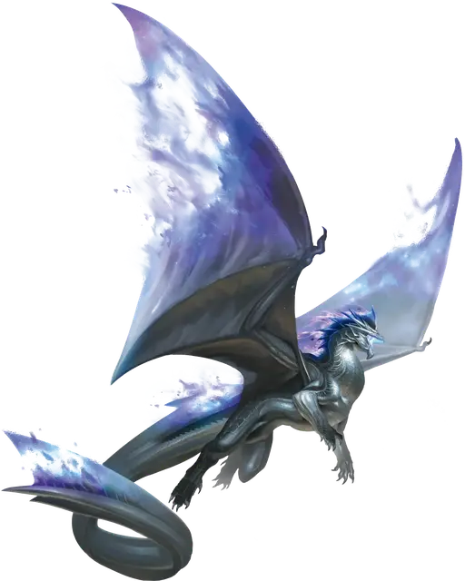

Дух дракона
Draconic Spirit
Большой Дракон, нейтральный

Класс Доспеха 14 + уровень ячейки (природный доспех)
Хиты 50 + 10 за каждый уровень ячейки выше 5-го (количество костей хитов духа дракона [к10] равно уровню заклинания)
Скорость 30 футов, плавая 30 футов, летая 60 футов
| мод | спас | ||
|---|---|---|---|
| СИЛ | 19 | +4 | +4 |
| ЛОВ | 14 | +2 | +2 |
| ТЕЛ | 17 | +3 | +3 |
| мод | спас | ||
|---|---|---|---|
| ИНТ | 10 | +0 | +0 |
| МДР | 14 | +2 | +2 |
| ХАР | 14 | +2 | +2 |
Иммунитет к состояниям отравление, очарование, испуг
Чувства слепое зрение 30 футов, тёмное зрение 60 футов, пассивное Восприятие 12
Языки Драконий, понимает языки, на которых вы говорите
Опасность —
Особенности
Сопротивление урону (только цветной и металлический). кислота, огонь, холод, электричество, яд.
Сопротивление урону (только самоцветный). звук, излучение, некротическая энергия, психическая энергия, силовое поле.
Общее сопротивление. Когда вы призываете дракона, выберите одно из его сопротивлений урону. Вы получаете сопротивление урону выбранного вида, пока заклинание активно.
Действия
Мультиатака. Дракон совершает количество атак Раздиранием, равное половине уровня ячейки, использованной для призыва (с округлением в меньшую сторону), и использует Оружие дыхания.
Раздирание. Рукопашная атака оружием: ваш модификатор броска атаки заклинанием к попаданию, досягаемость 10 футов, одно существо. Попадание: 1к6 + 4 + уровень ячейки колющего урона.
Оружие дыхания. Дракон выдыхает поток разрушительной энергии в 30-футовом конусе. Каждое существо в этой области должно совершить спасбросок Ловкости против Сл спасброска ваших заклинаний, при провале получая 2к6 урона того вида, который вы выберете из списка сопротивлений этого дракона, и половину этого урона при успехе.
Описание
Блок статистики для призыва духа дракона с помощью заклинания призыв духа дракона [summon draconic spirit].